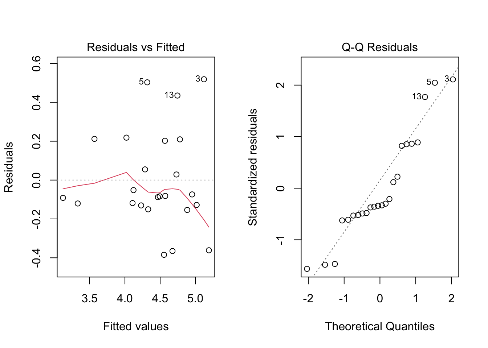
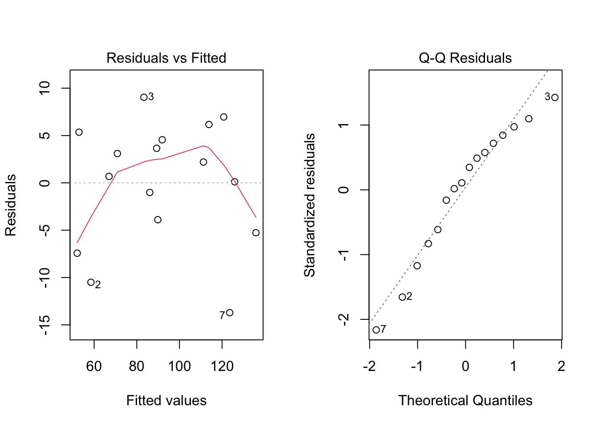
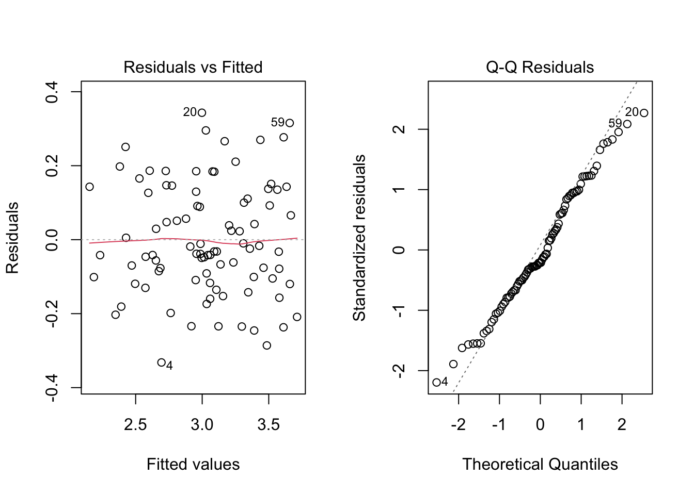
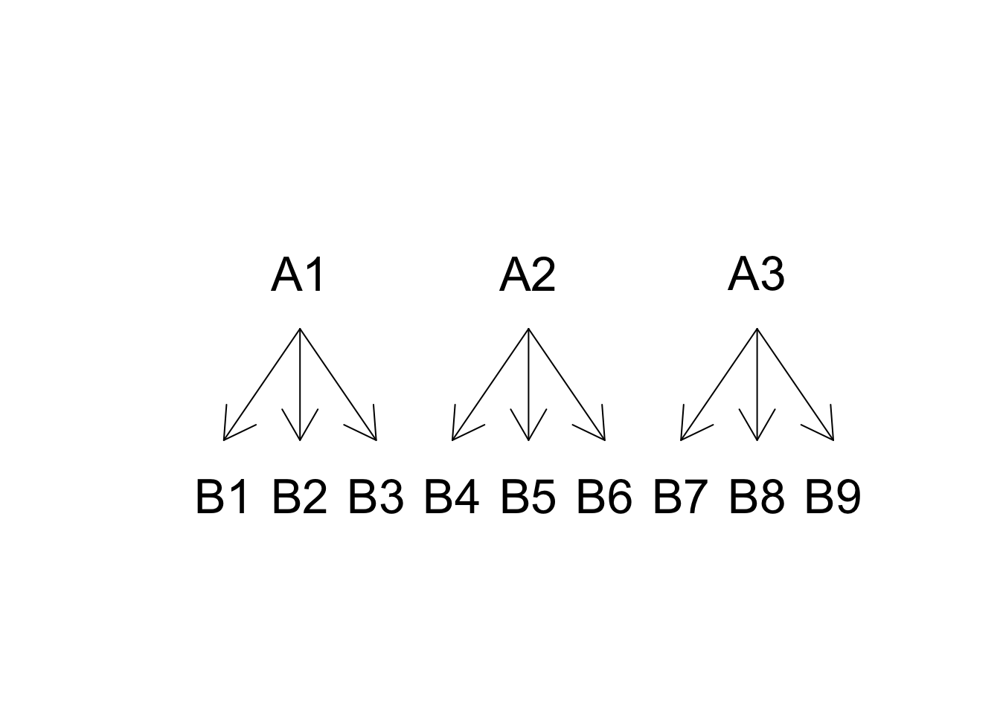

# Riquadro 10.1
# Esempio 10.1
# Confronto tra genotipi, a blocchi randomizzati
# Caricamento dei pacchetti
library(statforbiology)
library(MASS)
library(car)
library(emmeans)
library(multcomp)
# Caricamento del dataset e analisi preliminari
dataset <- getAgroData("WinterWheat2002")
head(dataset)
## Plot Block Genotype Yield
## 1 57 A COLOSSEO 4.31
## 2 61 B COLOSSEO 4.73
## 3 11 C COLOSSEO 5.64
## 4 60 A CRESO 3.99
## 5 10 B CRESO 4.82
## 6 42 C CRESO 4.17
dataset$Block <- factor(dataset$Block)
dataset$Genotype <- factor(dataset$Genotype)
with(dataset, data.frame(Mean = tapply(Yield, Genotype, mean),
SD = tapply(Yield, Genotype, sd)))
## Mean SD
## COLOSSEO 4.893333 0.6798774
## CRESO 4.326667 0.4366158
## DUILIO 4.240000 0.1400000
## GRAZIA 4.340000 0.3764306
## IRIDE 4.963333 0.1892969
## SANCARLO 4.503333 0.2250185
## SIMETO 3.340000 0.3915354
## SOLEX 4.790000 0.264575110 Ricomponiamo il ‘puzzle’
È giunto ormai il momento di riunire tutti gli strumenti presentati nei capitoli precedenti e sviluppare un piano di lavoro per eseguire analisi dei dati corrette, produrre risultati affidabili e giungere a conclusioni pienamente supportate dai dati a nostra disposizione. Il piano di lavoro proposto non deve essere preso troppo alla lettera: è solo uno dei possibili approcci all’analisi dei dati e deve essere inteso solo come punto di partenza per ‘principianti’. Il piano di lavoro è il seguente:
- Caricare i dati ed eseguire le eventuali trasformazioni che si rendano necessarie (ad es. le trasformazioni delle variabili numeriche in ‘factors’ oppure le trasformazioni stabilizzanti).
- Descrivere i dati, utilizzando almeno un indicatore di tendenza centrale (media) e un indicatore di variabilità (deviazione standard) come indicato nel Capitolo 3. Se necessario, utilizzare grafici per scoprire le caratteristiche principali del dataset in studio, scoprire pattern e individuare valori anomali: lasciare che i dati parlino da soli e “ascoltare” ciò che hanno da dire. Questa fase preliminare è definita Analisi Esplorativa (Exploratory Data Analysis; EDA) ed è una parte fondamentale dell’analisi dei dati, prima dell’adattamento del modello, dell’inferenza e del test d’ipotesi.
- Specificare il modello descrittivo più opportuno a stimarne i parametri con R.
- Controllare il fitting per il rispetto delle assunzioni di base. Se necessario, trasformare i dati e ripetere il fitting.
- Calcolare gli errori standard e/o gli intervalli di confidenza e aggiungerli a tutte le stime puntuali. Verificare la significatività di tutti gli effetti tramite il test di F nell’ANOVA.
- Utilizzare combinazioni lineari o non lineari dei parametri o delle medie per testare eventuali altre ipotesi di interesse e rispondere ai nostri quesiti di ricerca.
- Presentare i risultati sotto forma di grafici e tabelle, cercando di evidenziare in modo conciso tutte le caratteristiche più interessanti del nostro set di dati.
In questo capitolo mostreremo come questo piano di lavoro possa essere messo in pratica, lavorando su alcuni dataset reali, relativi ad esperimenti agronomici di pieno campo.
10.1 Esempio 10.1: confronto tra genotipi in un esperimento a blocchi randomizzati
Consideriamo un esperimento di campo per confrontare otto genotipi di frumento, disegnato a blocchi randomizzati con tre repliche, nella collina Umbra durante la stagione di semina 2002 [Ciriciofolo, 2004; pubblicato in Belocchi et al. (2003)]. In questa analisi consideriamo la resa (in tonnellate per ettaro), che è disponibile nel dataset ‘WinterWheat2002’, nel package ‘statforbiology’. La variabile ‘Block’ deve essere trasformata in un ‘factor’ prima dell’analisi, altrimenti, R stimerebbe erroneamente un modello di regressione lineare (mentre i blocchi sono classi nominali e non ordinate). Anche la variabile ‘Genotype’ può essere trasformata in un fattore, sebbene ciò sia facoltativo, poiché i genotipi sono rappresentati con il loro nome e non con una codifica numerica.
L’EDA rivela che i genotipi, ad eccezione di Simeto, sono relativamente simili in termini di resa media. Allo stesso tempo, esistono alcune differenze in termini di deviazione standard, che potrebbero giustificare un attento controllo per possibili problemi di eteroschedasticità.
La produzione di ogni unità sperimentale (parcella) è determinata da:
- genotipo;
- blocco;
- altri effetti puramente casuali (residuo).
Quindi, possiamo stimare un modello con due predittori nominali, come mostrato nell’Esempio 4.3 del Capitolo 4. Le analisi grafiche dei residui non mostrano evidenze di non-normalità, ma mostrano alcuni lievi segni di eteroschedasticità (Figura 10.1, sinistra). Per valutare meglio questoi aspetto, possiamo eseguire il test di Levene, ma dobbiamo considerare che la funzione leveneTest(), così come l’abbiamo descritta al Capitolo 8, non può essere utilizzata con dati provenienti da esperimenti a blocchi randomizzati; in questo caso dobbiamo utilizzare come risposta non le produzioni osservate, bensì i residui del modello in valore assoluto [Bhandary e Dai (2013); vedi riquadro sottostante]. Il test di Levene non è significativo e il grafico di Box-Cox (non mostrato) conferma che non è necessaria alcuna trasformazione dei dati. Di conseguenza, concludiamo che non ci sono deviazioni significative dalle assunzioni di base e procediamo con l’analisi, esaminando la tabella ANOVA. Il controllo preliminare dei gradi di libertà conferma che il modello è stato specificato correttamente (vale a dire, i DF sono uguali, rispettivamente, al numero di blocchi meno uno e al numero di genotipi meno uno) e, in base al P-value, rigettiamo l’ipotesi nulla, concludendo che esistono differenze significative tra i genotipi.
# Riquadro 10.2
# Esempio 10.1 [segue]
# Adattamento di un modello ANOVA a due vie
mod <- lm(Yield ~ Block + Genotype, data = dataset)
# Check dei residui (non eseguito in fase di compilazione)
# par(mfrow=c(2,2))
# plot(mod, which = 1)
# plot(mod, which = 2)
# boxcox(mod)
# Test di Levene (modificato per blocchi randomizzati)
leveneTest(abs(residuals(mod)) ~ Genotype, data = dataset)
## Levene's Test for Homogeneity of Variance (center = median)
## Df F value Pr(>F)
## group 7 0.7932 0.6037
## 16
# Analisi della varianza
anova(mod)
## Analysis of Variance Table
##
## Response: Yield
## Df Sum Sq Mean Sq F value Pr(>F)
## Block 2 0.7977 0.39883 3.8502 0.0465178 *
## Genotype 7 5.6305 0.80436 7.7651 0.0006252 ***
## Residuals 14 1.4502 0.10359
## ---
## Signif. codes: 0 '***' 0.001 '**' 0.01 '*' 0.05 '.' 0.1 ' ' 1
Le stime dei parametri del modello sono relativamente poco interessanti in questo caso, mentre i confronti a coppie possono essere utili per la raccomandazione varietale. Con otto genotipi e, quindi, \((8 \times 7)/2 = 28\) contrasti, è necessaria una correzione per la molteplicità. Oltre ai confronti a coppie con i relativi intervalli di confidenza, riportiamo una tabella delle medie in ordine decrescente di resa, con le lettere di significanza. La conclusione è che Simeto è risultato significativamente peggiore di tutti gli altri genotipi, ad eccezione di Duilio.
# Riquadro 10.3
# Esempio 10.1 [segue]
# Confronti multipli
meds <- emmeans(mod, ~Genotype)
confint(contrast(meds, method = "pairwise"))
## contrast estimate SE df lower.CL upper.CL
## COLOSSEO - CRESO 0.5667 0.263 14 -0.3606 1.494
## COLOSSEO - DUILIO 0.6533 0.263 14 -0.2740 1.581
## COLOSSEO - GRAZIA 0.5533 0.263 14 -0.3740 1.481
## COLOSSEO - IRIDE -0.0700 0.263 14 -0.9973 0.857
## COLOSSEO - SANCARLO 0.3900 0.263 14 -0.5373 1.317
## COLOSSEO - SIMETO 1.5533 0.263 14 0.6260 2.481
## COLOSSEO - SOLEX 0.1033 0.263 14 -0.8240 1.031
## CRESO - DUILIO 0.0867 0.263 14 -0.8406 1.014
## CRESO - GRAZIA -0.0133 0.263 14 -0.9406 0.914
## CRESO - IRIDE -0.6367 0.263 14 -1.5640 0.291
## CRESO - SANCARLO -0.1767 0.263 14 -1.1040 0.751
## CRESO - SIMETO 0.9867 0.263 14 0.0594 1.914
## CRESO - SOLEX -0.4633 0.263 14 -1.3906 0.464
## DUILIO - GRAZIA -0.1000 0.263 14 -1.0273 0.827
## DUILIO - IRIDE -0.7233 0.263 14 -1.6506 0.204
## DUILIO - SANCARLO -0.2633 0.263 14 -1.1906 0.664
## DUILIO - SIMETO 0.9000 0.263 14 -0.0273 1.827
## DUILIO - SOLEX -0.5500 0.263 14 -1.4773 0.377
## GRAZIA - IRIDE -0.6233 0.263 14 -1.5506 0.304
## GRAZIA - SANCARLO -0.1633 0.263 14 -1.0906 0.764
## GRAZIA - SIMETO 1.0000 0.263 14 0.0727 1.927
## GRAZIA - SOLEX -0.4500 0.263 14 -1.3773 0.477
## IRIDE - SANCARLO 0.4600 0.263 14 -0.4673 1.387
## IRIDE - SIMETO 1.6233 0.263 14 0.6960 2.551
## IRIDE - SOLEX 0.1733 0.263 14 -0.7540 1.101
## SANCARLO - SIMETO 1.1633 0.263 14 0.2360 2.091
## SANCARLO - SOLEX -0.2867 0.263 14 -1.2140 0.641
## SIMETO - SOLEX -1.4500 0.263 14 -2.3773 -0.523
##
## Results are averaged over the levels of: Block
## Confidence level used: 0.95
## Conf-level adjustment: tukey method for comparing a family of 8 estimates
# Display a lettere
cld(meds, Letters = LETTERS, reverse = T)
## Genotype emmean SE df lower.CL upper.CL .group
## IRIDE 4.96 0.186 14 4.56 5.36 A
## COLOSSEO 4.89 0.186 14 4.49 5.29 A
## SOLEX 4.79 0.186 14 4.39 5.19 A
## SANCARLO 4.50 0.186 14 4.10 4.90 A
## GRAZIA 4.34 0.186 14 3.94 4.74 A
## CRESO 4.33 0.186 14 3.93 4.73 A
## DUILIO 4.24 0.186 14 3.84 4.64 AB
## SIMETO 3.34 0.186 14 2.94 3.74 B
##
## Results are averaged over the levels of: Block
## Confidence level used: 0.95
## P value adjustment: tukey method for comparing a family of 8 estimates
## significance level used: alpha = 0.05
## NOTE: If two or more means share the same grouping symbol,
## then we cannot show them to be different.
## But we also did not show them to be the same.10.2 Esempio 10.2: confronto tra co-adiuvanti in un esperimento a quadrato latino
Consideriamo un esperimento a quadrato latino con quattro repliche, finalizzato a confrontare tre possibili co-adiuvanti per l’erbicida rimsulfuron (Onofri, 1990; dati non pubblicati). I risultati di questo esperimento sono disponibili nel dataset ‘adjuvantsLS’, nel package statforbiology; la colonna ‘Yield’ rappresenta la risposta osservata, la colonna ‘Adjuvant’ il predittore nominale, mentre le colonne ‘Row’ and ‘Column’ rappresentano le righe e le colonne della griglia a quadrato latino e costituiscono i due fattori di raggruppamento da inserire nel modello. Le tre variabili indipendenti dovranno essere trasformate in fattori prima dell’analisi, sebbene ciò sia strettamente necessario solo per le righe e le colonne, che sono caratterizzate da codifica numerica. Invece di trasformare le tre variabili una alla volta (come nell’Esempio 10.1), possiamo utilizzare la funzione transform(), passandole il ‘dataframe’ come primo argomento e, successivamente, l’elenco delle trasformazioni da eseguire al suo interno (Riquadro 10.4).
L’EDA si basa sull’analisi delle medie aritmetiche e delle deviazioni standard dei diversi trattamenti: la media ottenuta con il tensioattivo sembra essere più alta rispetto alle altre medie, mentre non si notano evidenti differenze tra i co-adiuvanti in termini di deviazioni standard.
# Riquadro 10.4
# Esempio 10.2
# Confronto tra co-adiuvanti in un quadrato latino
# Caricamento dei pacchetti
library(statforbiology)
library(MASS)
library(emmeans)
library(multcomp)
# Caricamento e trasformazione dei dati
dataset <- getAgroData("adjuvantsLS")
dataset <- transform(dataset,
Adjuvant = factor(Adjuvant),
Row = factor(Row),
Column = factor(Column))
head(dataset[,c(2, 6, 7, 24)])
## Adjuvant Column Row Yield
## 1 AmmoniumSulphate 1 3 58.23
## 2 AmmoniumSulphate 2 1 47.98
## 3 AmmoniumSulphate 3 4 92.39
## 4 AmmoniumSulphate 4 2 85.97
## 5 MineralOil 1 2 73.99
## 6 MineralOil 2 4 92.97
# EDA
with(dataset, data.frame(Mean = tapply(Yield, Adjuvant, mean),
SD = tapply(Yield, Adjuvant, sd)))
## Mean SD
## AmmoniumSulphate 71.1425 21.40518
## MineralOil 101.1475 23.00979
## None 80.5525 30.51889
## Surfactant 115.4250 20.69268In questo esempio, abbiamo un trattamento sperimentale e due effetti ‘blocco’ che debbono necessariamente essere inclusi nel modello (Jensen et al. 2018), che, di conseguenza, è così definito:
\[Y_{ijk} = \mu + \gamma_k + \beta_j + \alpha_i + \varepsilon_{ijk}\]
dove \(\mu\) è l’intercetta, \(\gamma\) è l’effetto della k-esima riga, \(\beta\) è l’effetto della j-esima colonna e \(\alpha\) è l’effetto dell’i-esimo coadiuvante. L’elemento \(\varepsilon_{ijk}\) rappresenta la componente random individuale, di ogni osservazione e si assume normalmente distribuita, con media 0 e deviazione standard \(\sigma\).
Dopo il ‘fitting’, estraiamo i residui e li sottoponiamo ad analisi grafica, che non rivela problemi di alcun tipo (Figura 10.2), mentre il grafico di Box-Cox conferma che non è necessaria alcuna trasformazione (non mostrato). Pertanto, possiamo procedere all’ANOVA per testare la significatività di tutti i fattori sperimentali.
# Riquadro 10.5
# Esempio 10.2 [segue]
# Fitting del modello
mod <- lm(Yield ~ Adjuvant + Row + Column, data = dataset)
# Check dei residui (non eseguito in run-time)
# plot(mod, which = 1)
# plot(mod, which = 2)
# boxcox(mod)
# Analisi della varianza
anova(mod)
## Analysis of Variance Table
##
## Response: Yield
## Df Sum Sq Mean Sq F value Pr(>F)
## Adjuvant 3 4793.9 1597.96 14.9051 0.003458 **
## Row 3 375.8 125.28 1.1685 0.396678
## Column 3 6022.6 2007.53 18.7253 0.001893 **
## Residuals 6 643.3 107.21
## ---
## Signif. codes: 0 '***' 0.001 '**' 0.01 '*' 0.05 '.' 0.1 ' ' 1
La differenza tra i co-adiuvanti è significativa (valore P = 0.0035) e la procedura di confronto multiplo rivela che il tensioattivo ha migliorato significativamente le prestazioni dell’erbicida, rispetto a quando è stato utilizzato da solo, mentre la resa con olio minerale non è stata significativamente inferiore a quella ottenuta col tensioattivo.
# Riquadro 10.6
# Esempio 10.2 [segue]
# Confronti multipli
avgs <- emmeans(mod, ~Adjuvant)
confint(contrast(avgs, method = "pairwise"))
## contrast estimate SE df lower.CL upper.CL
## AmmoniumSulphate - MineralOil -30.00 7.32 6 -55.35 -4.66
## AmmoniumSulphate - None -9.41 7.32 6 -34.75 15.93
## AmmoniumSulphate - Surfactant -44.28 7.32 6 -69.63 -18.94
## MineralOil - None 20.59 7.32 6 -4.75 45.94
## MineralOil - Surfactant -14.28 7.32 6 -39.62 11.07
## None - Surfactant -34.87 7.32 6 -60.22 -9.53
##
## Results are averaged over the levels of: Row, Column
## Confidence level used: 0.95
## Conf-level adjustment: tukey method for comparing a family of 4 estimates
cld(avgs, Letters = LETTERS, reversed = TRUE)
## Adjuvant emmean SE df lower.CL upper.CL .group
## Surfactant 115.4 5.18 6 102.8 128.1 A
## MineralOil 101.1 5.18 6 88.5 113.8 AB
## None 80.6 5.18 6 67.9 93.2 BC
## AmmoniumSulphate 71.1 5.18 6 58.5 83.8 C
##
## Results are averaged over the levels of: Row, Column
## Confidence level used: 0.95
## P value adjustment: tukey method for comparing a family of 4 estimates
## significance level used: alpha = 0.05
## NOTE: If two or more means share the same grouping symbol,
## then we cannot show them to be different.
## But we also did not show them to be the same.10.3 Esempio 10.3: interazione tra genotipo e concimazione azotata
Quindici genotipi di frumento sono stati confrontati a due diversi livelli di fertilizzazione azotata, utilizzando un disegno a blocchi randomizzati con tre repliche. L’esperimento mirava a valutare se la raccomandazione varietale dovesse essere costante ed indipendente dal livello di concimazione azotata. Il set di dati è stato generato tramite simulazione Monte Carlo, a partire dai risultati riportati in Stagnari et al. (2013) ed è disponibile come ‘NGenotypeFull’ nel package statforbiology.
In questo esperimento, la resa è determinata da quattro effetti:
- blocco
- genotipo
- livello di azoto
- interazione tra genotipo e livello di azoto
Di conseguenza, il modello mostrato può essere codificato come nel Capitolo 4 (Esempio 4.4), aggiungendo l’effetto del blocco. Per stimare questo modello, possiamo caricare i dati e trasformare i predittori numerici in fattori. Per questa trasformazione, nel riquadro sottostante abbiamo utilizzato la funzione lapply() invece della funzione transform(), che avevamo utilizzato in un esempio precedente. Con lapply(), le variabili da trasformare vengono recuperate utilizzando gli indici di colonna, vengono trasformate utilizzando la funzione factor() (passata come secondo argomento) e riassegnate alle stesse posizioni che avevano in precedenza nel ‘dataframe’.
Per brevità, saltiamo l’EDA e passiamo direttamente alla stima dei parametri; l’analisi grafica dei residui produce i risultati mostrati nella Figura 10.3, dove non osserviamo deviazioni evidenti rispetto agli assunti di base per i modelli lineari; pertanto, procediamo con l’ANOVA.
# Riquadro 10.7
# Esempio 10.3
# Interazione tra genotipo e concimazione azotata
# Caricamento dei pacchetti
library(statforbiology)
library(MASS)
library(car)
library(emmeans)
library(multcomp)
# Caricamento e trasformazione dei dati
dataset <- getAgroData("NGenotypeFull")
dataset[,1:3] <- lapply(dataset[,1:3], factor)
head(dataset)
## Block Genotype N Yield
## 1 1 A 1 2.146
## 2 2 A 1 2.433
## 3 3 A 1 2.579
## 4 1 A 2 2.362
## 5 2 A 2 2.919
## 6 3 A 2 2.912
# Model fitting
mod <- lm(Yield ~ Block + Genotype * N, data=dataset)
# Model checking (not run)
# plot(mod, which = 1)
# plot(mod, which = 2)
# boxcox(mod)
# Variance partitioning
anova(mod)
## Analysis of Variance Table
##
## Response: Yield
## Df Sum Sq Mean Sq F value Pr(>F)
## Block 2 0.0944 0.04721 1.3310 0.2721536
## Genotype 14 10.5408 0.75291 21.2297 < 2.2e-16 ***
## N 1 1.6246 1.62463 45.8092 7.175e-09 ***
## Genotype:N 14 1.6061 0.11472 3.2349 0.0008204 ***
## Residuals 58 2.0570 0.03547
## ---
## Signif. codes: 0 '***' 0.001 '**' 0.01 '*' 0.05 '.' 0.1 ' ' 1
La lettura della tabella ANOVA per un esperimento a due vie richiede una certa attenzione ed è fondamentale procedere dal basso verso l’alto, considerando che un’interazione cross-over significativa potrebbe nascondere gli effetti dei fattori principali (vedere Capitolo 4). In generale, se l’interazione fosse significativa, dovremmo sempre riportare e commentare le medie delle combinazioni tra i livelli dei fattori sperimentali. D’altra parte, se l’interazione non fosse significativa, potremmo invece riassumere i risultati riportando e commentando solo le medie degli effetti principali.
In questo esempio, l’interazione è significativa e la conclusione è che la raccomandazione varietale non può essere univoca, ma deve cambiare a seconda del livello di fertilizzazione azotata. Pertanto, è necessario riportare e commentare le medie dei genotipi per ciascun livello di azoto; abbiamo due possibilità:
- confrontare tutti i genotipi, anche se concimati in modo diverso;
- confrontando tra loro solo i genotipi concimati nello stesso modo.
Il primo approccio è molto flessibile, ma implica un numero elevato di confronti \((10 x 9) / 2 = 45\)); di conseguenza, implica anche un forte aggiustamento per la molteplicità, quindi una potenza ridotta e maggiori rischi di errori di II specie. Tale approccio è da raccomandare solo se strettamente necessario e, in questo caso, la codifica R per la funzione emmeans() deve utilizzare l’operatore : (ad esempio: emmeans(mod, ~Genotype:N)).
Il secondo approccio implica invece un numero inferiore di confronti (\(2 x [5 x 4)/2 = 20\)] e, in questo esempio, appare più logico e sensato, da un punto di vista agronomico. Nel riquadro sottostante questo approccio viene implementato utilizzando l’operatore di ‘condizionamento’ (|).
# Riquadro 10.7
# Esempio 10.3 [segue]
# Confronto multiplo entro concimazione
GNmeans2 <- emmeans(mod, ~Genotype|N)
cld(GNmeans2, Letters=LETTERS)
## N = 1:
## Genotype emmean SE df lower.CL upper.CL .group
## A 2.39 0.109 58 2.17 2.60 A
## M 2.43 0.109 58 2.21 2.65 AB
## C 2.53 0.109 58 2.32 2.75 ABC
## G 2.61 0.109 58 2.39 2.83 ABCD
## H 2.69 0.109 58 2.47 2.91 ABCD
## I 2.77 0.109 58 2.55 2.99 ABCDE
## B 2.92 0.109 58 2.70 3.13 ABCDEF
## D 2.96 0.109 58 2.74 3.17 BCDEF
## N 2.99 0.109 58 2.77 3.21 CDEFG
## O 3.00 0.109 58 2.78 3.22 CDEFG
## F 3.06 0.109 58 2.85 3.28 CDEFG
## J 3.10 0.109 58 2.88 3.31 DEFG
## E 3.26 0.109 58 3.04 3.47 EFG
## K 3.40 0.109 58 3.18 3.61 FG
## L 3.52 0.109 58 3.31 3.74 G
##
## N = 2:
## Genotype emmean SE df lower.CL upper.CL .group
## C 2.19 0.109 58 1.97 2.41 A
## I 2.63 0.109 58 2.41 2.85 AB
## A 2.73 0.109 58 2.51 2.95 ABC
## M 2.99 0.109 58 2.77 3.21 BCD
## H 3.02 0.109 58 2.80 3.24 BCD
## F 3.11 0.109 58 2.90 3.33 BCDE
## G 3.13 0.109 58 2.91 3.34 BCDEF
## B 3.24 0.109 58 3.02 3.46 CDEF
## D 3.35 0.109 58 3.13 3.56 DEF
## O 3.35 0.109 58 3.13 3.57 DEF
## E 3.47 0.109 58 3.25 3.68 DEF
## L 3.53 0.109 58 3.32 3.75 DEF
## J 3.62 0.109 58 3.40 3.83 EF
## K 3.62 0.109 58 3.40 3.83 EF
## N 3.67 0.109 58 3.45 3.89 F
##
## Results are averaged over the levels of: Block
## Confidence level used: 0.95
## P value adjustment: tukey method for comparing a family of 15 estimates
## significance level used: alpha = 0.05
## NOTE: If two or more means share the same grouping symbol,
## then we cannot show them to be different.
## But we also did not show them to be the same.10.4 Esempio 10.4: confronto tra incroci in un disegno fattoriale gerarchico
L’esempio precedente era relativo ad un disegno fattoriale completamente incrociato, dato che i livelli delle lavorazioni erano gli stessi per ogni livello di diserbo. In alcuni casi possiamo trovare disegni innestati, dove i livelli di un fattore cambiano al cambiare dei livelli dell’altro fattore. Nell’esempio seguente abbiamo considerato tre linee pure impollinanti di mais (A1, A2 ed A3), che abbiamo incrociato con tre linee pure portaseme, diverse per ogni impollinante (B1, B2, B3 per A1, B4, B5, B6 per A2 e B7, B8, B9 per A3). Alla fine abbiamo nove ibridi in tre gruppi, a seconda della linea impollinante. L’esperimento è stato disegnato a blocchi randomizzati completi con quattro repliche (36 osservazioni in totale) e i risultati sono disponibili nel dataset ‘crosses’ nel package statforbiology.
In questo esperimento, la produzione del mais dipende dal blocco e dall’effetto paterno, mentre l’effetto materno può essere solo determinato entro ogni linea impollinante. Si dice che l’effetto materno è innestato nell’effetto paterno, come mostrato in Figura 10.4. Pertanto, il modello lineare risulta così definito:
\[Y_{ijk} = \mu + \gamma_k + \alpha_i + \delta_{ij} + \varepsilon_{ijk}\]
dove \(\gamma_k\) è l’effetto del blocco \(k\), \(\alpha_i\) è l’effetto dell’impollinante \(i\) e \(\delta_{ij}\) è l’effetto del portaseme \(j\) entro ogni linea impollinante \(i\). La componente random \(\varepsilon\) viene assunta, come al solito, gaussiana e omoscedastica, con media 0 e deviazione standard uguale a \(\sigma\).
La differenza con un modello ANOVA completamente incrociato dovrebbe essere chiara: in quest’ultimo caso abbiamo due effetti, A, B e la loro interazione A:B, mentre in un modello innestato abbiamo solo l’effetto A e l’effetto B entro A, mentre l’effetto principale B manca, in quanto non esiste in pratica.

In R, questo modello gerarchico può essere codificato utilizzando l’operatore di nesting /1, come mostrato nel riquadro sottostante. Le analisi grafiche dei residui consentono di escludere qualsiasi deviazione significativa rispetto agli assunti di base (i grafici non sono mostrati per motivi di spazio) e la tabella ANOVA mostra che tutti gli effetti sono significativi; pertanto, possiamo esaminare e confrontare le medie dei diversi ibridi, anche considerando che l’effetto paterno è relativamente poco importante, dato che le linee impollinanti sono incrociate con linee portaseme diverse. Il confronto multiplo ve lo lascio come esercizio.
# Riquadro 10.8
# Esempio 10.4
# Confronto tra ibridi in un disegno 'innestato'
# Caricamento dei pacchetti
library(statforbiology)
library(MASS)
# Caricamento dati e trasformazioni
dataset <- getAgroData("crosses")
dataset[,1:3] <- lapply(dataset[,1:3], factor)
head(dataset, 5)
## Male Female Block Yield
## 1 A1 B1 1 9.984718
## 2 A1 B1 2 13.932663
## 3 A1 B1 3 12.201312
## 4 A1 B1 4 1.916661
## 5 A1 B2 1 8.928465
# Fitting del modello
mod <- lm(Yield ~ Block + Male/Female, data = dataset)
# Analisi dei residui (non mostrata)
# plot(mod, which = 1)
# plot(mod, which = 2)
# boxcox(mod)
# Analisi della varianza
anova(mod)
## Analysis of Variance Table
##
## Response: Yield
## Df Sum Sq Mean Sq F value Pr(>F)
## Block 3 383.75 127.917 44.355 6.051e-10 ***
## Male 2 134.76 67.378 23.363 2.331e-06 ***
## Male:Female 6 575.16 95.860 33.239 1.742e-10 ***
## Residuals 24 69.21 2.884
## ---
## Signif. codes: 0 '***' 0.001 '**' 0.01 '*' 0.05 '.' 0.1 ' ' 110.5 Esempio 10.5: un esperimento di germinazione ripetuto due volte
I risultati di un singolo esperimento, anche se molto precisi e significativi, costituiscono una prova scientifica abbastanza debole, se non sono confermati da altri esperimenti simili e indipendenti. Infatti, i risultati di un singolo esperimento possono essere influenzato da ‘disturbi’ di ogni tipo, errori di misurazione, eventi imprevisti o intrusioni, che possono anche non essere rilevati nel corso dell’esperimento stesso. Inoltre, un risultato significativo può essere valido solo nelle condizioni in cui è stato osservato, senza essere necessariamente riproducibile in altre condizioni (vedi Cap. 1).
Pertanto, l’esecuzione di esperimenti confermativi è considerata un elemento chiave per il progresso scientifico in agricoltura e per capire la riproducibilità dei risultati (White et al. 2025). La sperimentazione di pieno campo, in quanto tale, non può essere ripetatuta nelle stesse identiche condizioni e quindi dobbiamo eseguire prove indipendenti in siti diversi, anni diversi o con materiali diversi. E’ quindi lecito attendersi un certo grado di variabilità tra una prova e l’altra, che richiede un’analisi finale aggregata per verificare l’ipotesi che i risultati delle diverse prove ripetute non differiscano significativamente tra di loro.
Consideriamo un esperimento di germinazione per tre genotipi di colza (Pace et al. 2012), organizzato in cella climatica, secondo uno schema a blocchi randomizzati con sei repliche. Le unità sperimentali sono piastre Petri da 50 semi ciascuna, disposte in tre blocchi, corrispondenti a diversi scaffali di una cella climatica, mantenuta a 20°C per l’intera durata dell’esperimento. Per confermare i risultati, l’esperimento è stato ripetuto indipendentemente in un altra cella climatica alla stessa temperatura; in entrambi gli esperimenti, dopo 15 giorni dall’inizio, è stato contato il numero di semi germinati in ogni capsula Petri, espresso in proporzione rispetto al numero totale di semi posti a germinare (Final Germinated Proportion; FGP).
I risultati di questi due esperimenti sono disponibili nel dataset ‘FGP_rape’, contenuto nel package statforbiology, dove le variabili ‘run’ e ‘shelf’ identificano, rispettivamente, l’esperimento e gli scaffali in ogni esperimento. Dopo aver caricato i dati, è necessario trasformare i predittori numerici (‘run’ e ‘shelf’) in fattori (vedi il codice più sotto) ed eseguire, preliminarmente, le analisi separate per ogni esperimento, al fine di garantire che non vi siano outliers o violazioni degli assunti di base in nessuno di essi. Inoltre, è necessario assicurarsi che le varianze dei residui dei diversi esperimenti siano simili (omoschedasticità tra esperimenti).
Per effettuare le analisi separate, è possibile semplificare il codice utilizzando la strategia split-apply-combine (Wickham 2011), basata sulle funzioni by() e lapply()2. La prima opera sui sottoinsiemi del dataset selezionato, suddivisi in base a una variabile di classificazione (in questo caso la variabile run) e produce una lista con i risultati della funzione lm() applicata a ciascun sottoinsieme. Su questa lista possiamo operare con la funzione lapply(), che permette di applicare le funzioni leveneTest() e shapiro.test() a ciascun elemento. Possiamo vedere che nessuno dei due test indica significative deviazioni rispetto agli assunti di base.
Per verificare l’omoschedasticità tra esperimenti, si può utilizzare il test F max di Hartely (Hartley, 1950), che consiste nel calcolare il rapporto tra la varianza residua massima e minima tra quelle osservate, che, in questo caso però, sono solo due. La significatività del test può essere ottenuta grazie alla distribuzione pmaxFratio(), che è contenuta nel package SuppDists (Wheeler 2024). In questo caso, il P-value non è sufficientemente basso per il rifiuto dell’ipotesi nulla, il che conferma l’omoschedasticità tra esperimenti (Riquadro 10.9).
# Riquadro 10.9
# Esempio 10.5
# Un esperimento di germinazione ripetuto due volte
# Caricamento dei pacchetti
library(statforbiology)
library(car)
library(SuppDists)
library(MASS)
library(emmeans)
library(multcomp)
# Caricamento e trasformazione dei dati
dataset <- getAgroData("FGP_rape")
dataset[,1:5] <- lapply(dataset[,1:5], factor)
head(dataset)
## Dish Run Shelf Species Genotype FGP
## 1 1 1 1 OilseedRape A 0.81
## 2 13 1 1 OilseedRape B 0.81
## 3 25 1 1 OilseedRape C 0.74
## 4 2 1 2 OilseedRape A 0.91
## 5 14 1 2 OilseedRape B 0.92
## 6 26 1 2 OilseedRape C 0.76
# Analisi separata delle due prove
lmFits <- by(dataset, dataset$Run,
function(df) lm(FGP ~ Genotype + Shelf, data = df) )
# Controllo della omoschedasticità entro esperimento
levTest <- by(dataset, dataset$Run,
function(df)
leveneTest(abs(residuals(lm(FGP ~ Genotype + Shelf, data = df))),
df$Genotype))
levTest
## dataset$Run: 1
## Levene's Test for Homogeneity of Variance (center = median)
## Df F value Pr(>F)
## group 2 0.2779 0.7612
## 15
## ------------------------------------------------------------
## dataset$Run: 2
## Levene's Test for Homogeneity of Variance (center = median)
## Df F value Pr(>F)
## group 2 1.5841 0.2376
## 15
lapply(lmFits, function(mods) shapiro.test(residuals(mods)))
## $`1`
##
## Shapiro-Wilk normality test
##
## data: residuals(mods)
## W = 0.90201, p-value = 0.06229
##
##
## $`2`
##
## Shapiro-Wilk normality test
##
## data: residuals(mods)
## W = 0.93221, p-value = 0.2124
# Controllo dell'omoschedasticità tra esperimenti
# by the Hartley Fmax test
mses <- unlist(
lapply(lmFits, function(mods) summary(mods)$sigma^2))
Fmax <- max(mses)/min(mses)
pmaxFratio(Fmax, 15, 2, lower.tail = FALSE)
## [1] 0.7404869
# Analisi della varianza per i due esperimenti separati
lapply(lmFits, function(mods) anova(mods))
## $`1`
## Analysis of Variance Table
##
## Response: FGP
## Df Sum Sq Mean Sq F value Pr(>F)
## Genotype 2 0.033011 0.0165056 15.6864 0.000825 ***
## Shelf 5 0.019911 0.0039822 3.7846 0.034871 *
## Residuals 10 0.010522 0.0010522
## ---
## Signif. codes: 0 '***' 0.001 '**' 0.01 '*' 0.05 '.' 0.1 ' ' 1
##
## $`2`
## Analysis of Variance Table
##
## Response: FGP
## Df Sum Sq Mean Sq F value Pr(>F)
## Genotype 2 0.042544 0.0212722 16.9876 0.0006081 ***
## Shelf 5 0.001761 0.0003522 0.2813 0.9129498
## Residuals 10 0.012522 0.0012522
## ---
## Signif. codes: 0 '***' 0.001 '**' 0.01 '*' 0.05 '.' 0.1 ' ' 1L’EDA dimostra che non ci sono problemi con le assunzioni di base e che l’effetto del trattamento è stato significativo in entrambi gli esperimenti. Passando alle analisi del dataset aggregato, possiamo notare che esso è totalmente simile a quello derivante da un qualunque esperimento fattoriale a due vie, con l’unica differenza che l’effetto blocco non è incrociato, ma ‘innestato’ all’interno degli esperimenti, poiché i ripiani sono diversi nelle diverse celle climatiche. Di conseguenza, il modello finale è:
\[y_{ijk} = \mu + \gamma_{ik} + \alpha_i + \beta_j + \alpha\beta_{ij} + \varepsilon_{ijk}\]
dove \(y\) è la risposta per l’i-esimo esperimento, il j-esimo genotipo e il k-esimo scaffale, \(\mu\) è l’intercetta, \(\gamma_{ik}\) è l’effetto del k-esimo scaffale nell’i-esimo esperimento, \(\alpha_i\) è l’effetto dell’i-esimo esperimento, \(\beta_j\) è l’effetto del j-esimo genotipo, \(\alpha\beta_{ij}\) è l’interazione ‘genotipo per esperimento’, mentre \(\varepsilon_{ijk}\) è il residuo per ciascuna osservazione, che si presume distribuito normalmente e omoschedastico (\(\epsilon_{ijk} \sim N(0, \sigma_{\varepsilon})\)).
# Riquadro 10.10
# Esempio 10.5 [segue]
# Analisi combinata: fitting del modello
mod <- lm(FGP ~ Genotype * Run + Run:Shelf, data = dataset)
# Controllo dei residui (non mostrato)
# plot(mod, which = 1)
# plot(mod, which = 2)
# boxcox(mod)
# Analisi della varianza combinata
anova(mod)
## Analysis of Variance Table
##
## Response: FGP
## Df Sum Sq Mean Sq F value Pr(>F)
## Genotype 2 0.074289 0.037144 32.2372 5.534e-07 ***
## Run 1 0.003025 0.003025 2.6254 0.1208
## Genotype:Run 2 0.001267 0.000633 0.5497 0.5856
## Run:Shelf 10 0.021672 0.002167 1.8809 0.1100
## Residuals 20 0.023044 0.001152
## ---
## Signif. codes: 0 '***' 0.001 '**' 0.01 '*' 0.05 '.' 0.1 ' ' 1L’analisi della tabella ANOVA per un insieme di esperimenti ripetuti fornisce un’idea della riproducibilità dei risultati. È possibile riscontrare le seguenti situazioni:
- L’interazione “esperimento per trattamento” è significativa. In questo caso, dovremmo concludere che gli effetti dei trattamenti e, probabilmente, la loro graduatoria, sono cambiati nei diversi esperimenti. Di conseguenza, l’aggregazione dei risultati non è possibile e dovremmo visualizzare e confrontare solo le medie dei trattamenti all’interno di ciascun esperimento.
- L’interazione non è significativa, ma l’effetto principale del trattamento lo è. Dovremmo quindi concludere che gli effetti dei trattamenti e degli esperimenti sono stati indipendenti e additivi; di conseguenza, le medie dei trattamenti sono cambiate nei diversi esperimenti, ma la loro graduatoria (e quindi il giudizio di merito) è risultato pienamente riproducibile. Spetta al ricercatore decidere se sia appropriato calcolare e visualizzare le medie generali dei trattamenti o mantenerle separate per i diversi esperimenti.
- Né l’interazione né gli effetti principali sono significativi. La conclusione è che i risultati sono pienamente riproducibili e possiamo riportare e commentare solo le medie generali dei trattamenti.
Nel nostro esempio, osserviamo che è significativo solo l’effetto del genotipo, il che significa che i risultati sono stati pienamente riproducibili. Pertanto, calcoliamo le medie generali dei genotipi e le sottoponiamo a confronto multiplo.
# Riquadro 10.11
# Esempio 10.5 [segue]
# Confronto multiplo per le medie generali dei genotipi
cld(emmeans(mod, ~ Genotype), Letters = LETTERS)
## Genotype emmean SE df lower.CL upper.CL .group
## C 0.781 0.0098 20 0.760 0.801 A
## A 0.871 0.0098 20 0.850 0.891 B
## B 0.882 0.0098 20 0.862 0.903 B Prima di concludere, è necessario sottolineare che il metodo di analisi dei dati proposto per questo esempio è sempre appropriato, sebbene in alcuni casi, soprattutto quando il numero di esperimenti è molto elevato, potrebbe essere opportuno impiegare un altro metodo, di cui verrà fornito un esempio nel Capitolo 12.
10.6 Esercizi
Per tutti gli esercizi che seguono, utilizzate il piano di lavoro proposto all’inizio di questo capitolo e cercate di giungere a conclusioni attendibili. Tutti i dataset sono disponibili nel package statforbiology e sono accessibili tramite la funzione getAgroData(). Il nome del dataset è specificato per ogni esercizio.
- È stato condotto un esperimento con un disegno completamente randomizzato per confrontare la resa di 5 genotipi di grano. I risultati (in bushel per acro) sono riportati nella tabella seguente: determinare il genotipo migliore e trarre conclusioni attendibili. L’esempio è tratto da Le Clerg (1962) e il dataset è disponibile come “LeClerg”.
| Variety | 1 | 2 | 3 |
|---|---|---|---|
| A | 32.4 | 34.3 | 37.3 |
| B | 20.2 | 27.5 | 25.9 |
| C | 29.2 | 27.8 | 30.2 |
| D | 12.8 | 12.3 | 14.8 |
| E | 21.7 | 24.5 | 23.4 |
- Colture cellulari di pomodoro sono state allevate su tre tipi di substrato, ottenuti aggiungendo al testimone una certa quantità di glucosio, fruttosio o saccarosio. L’esperimento è stato condotto con un disegno completamente randomizzato con 5 repliche, osservando la crescita delle cellule su ogni unità sperimentale. Determinare quale substrato ha prodotto la crescita cellulare più elevata e commentare i risultati. Il dataset è mostrato nella tabella sottostante ed è disponibile come “sugarsMedia”.
| Control | Glucose | Fructose | Sucrose |
|---|---|---|---|
| 5.285 | 4.020 | 3.705 | 4.776 |
| 5.737 | 3.648 | 3.714 | 3.771 |
| 5.320 | 3.861 | 3.110 | 4.742 |
| 6.050 | 4.098 | 3.522 | 4.246 |
| 5.705 | 3.919 | 3.957 | 4.212 |
- È stata valutata la durata di un impianto di riscaldamento (in ore prima del guasto), a seconda della temperatura di esercizio. L’esperimento è stato organizzato includendo quattro diverse temperature ed è stato disegnato con randomizzazione completa e 6 repliche. Considerare la temperatura come un fattore e determinare la temperatura di esercizio ottimale per massimizzare la durata dell’impianto. I risultati sono mostrati di seguito e sono disponibili come ‘failureTimes’. SUGGERIMENTO: in questo esercizio è necessaria una trasformazione stabilizzante, che non viene riconosciuta automaticamente dalla funzione
emmeans(). Pertanto, la retro-trasformazione richiederà il processo descritto alla fine della Sezione 9.6.
| Temp | 1 | 2 | 3 | 4 | 5 | 6 |
|---|---|---|---|---|---|---|
| 1520 | 1953 | 2135 | 2471 | 4727 | 6134 | 6314 |
| 1620 | 1190 | 1286 | 1550 | 2125 | 2557 | 2845 |
| 1660 | 651 | 837 | 848 | 1038 | 1361 | 1543 |
| 1708 | 511 | 651 | 651 | 652 | 688 | 729 |
- Un entomologo ha contato il numero di uova deposte da un lepidottero su tre substrati diversi, in un esperimento a randomizzazione completa 15 repliche. Identificare il substrato con la più bassa ovideposizione. I risultati sono riportati di seguito e sono disponibili come ‘lepidopteraEggs’.
| Rep | A | B | C |
|---|---|---|---|
| 1 | 456 | 118 | 72 |
| 2 | 411 | 213 | 99 |
| 3 | 594 | 74 | 24 |
| 4 | 280 | 26 | 20 |
| 5 | 664 | 163 | 89 |
| 6 | 379 | 76 | 47 |
| 7 | 444 | 240 | 32 |
| 8 | 436 | 75 | 29 |
| 9 | 294 | 108 | 1 |
| 10 | 431 | 68 | 33 |
| 11 | 476 | 108 | 20 |
| 12 | 382 | 153 | 22 |
| 13 | 413 | 98 | 27 |
| 14 | 485 | 120 | 39 |
| 15 | 440 | 126 | 12 |
- È stato condotto un esperimento in un aranceto nel Sud Italia, comprendente 5 sistemi di irrigazione in 5 blocchi completi. Le rese osservate (in tonnellate per ettaro) sono riportate nella tabella sottostante e sono disponibili come ‘orangeIrrigation’. Qual è il sistema di irrigazione che ha offerto le migliori prestazioni?
| Method | 1 | 2 | 3 | 4 | 5 |
|---|---|---|---|---|---|
| Localised | 26.7 | 27.9 | 51.2 | 29.0 | 34.8 |
| Surface | 46.4 | 47.7 | 33.9 | 32.7 | 21.7 |
| Sprinkler | 38.5 | 29.1 | 33.6 | 11.8 | 27.6 |
| Sprinker+localised | 41.3 | 33.9 | 31.3 | 5.8 | 12.1 |
| Submersion | 35.2 | 46.9 | 19.8 | 27.9 | 26.7 |
- È stata condotta una prova di fertilizzazione, con cinque trattamenti e un disegno a blocchi randomizzati con cinque repliche. Per circostanze casuali impreviste, è venuto a mancare un dato per il trattamento “50N” nel secondo blocco. I dati osservati sono i contenuti percentuali di P2O5 nei campioni di foglie raccolte in ogni parcella e sono disponibili come ‘missingVal’. Analizzando i dati rispondete alle seguenti domande. È conveniente fertilizzare? È conveniente arrivare a 100 kg/ha con fertilizzazione azotata? L’aggiunta di P2O5 è una pratica conveniente? SUGGERIMENTO: considerare il valore mancante e assicurarsi che l’approccio utilizzato per l’ANOVA sia corretto
| Fert | 1 | 2 | 3 | 4 | 5 |
|---|---|---|---|---|---|
| 100N | 6.9 | 9.6 | 5.6 | 7.4 | 8.2 |
| 100N+75P | 9.6 | 9.3 | 12.0 | 10.6 | 11.6 |
| 50N | 7.3 | NA | 7.7 | 7.7 | 7.0 |
| 50N+75P | 10.8 | 9.2 | 8.8 | 9.9 | 9.4 |
| Unfertilised | 5.6 | 6.1 | 5.3 | 5.9 | 7.4 |
- È stato eseguito un esperimento a quadrato latino, per valutare l’effetto di quattro diversi fertilizzanti sulla resa della lattuga. I dati osservati sono disponibili come ‘lettuceLS’ e sono riportati nella tabella seguente. Qual è il fertilizzante migliore?
| Fertiliser | Row | Column | Yield |
|---|---|---|---|
| A | 1 | 1 | 155.5 |
| B | 1 | 2 | 128.4 |
| C | 1 | 3 | 105.5 |
| D | 1 | 4 | 182.4 |
| A | 2 | 4 | 185.4 |
| B | 2 | 3 | 163.8 |
| C | 2 | 1 | 178.4 |
| D | 2 | 2 | 238.3 |
| A | 3 | 3 | 173.1 |
| B | 3 | 4 | 170.0 |
| C | 3 | 2 | 198.6 |
| D | 3 | 1 | 213.3 |
| A | 4 | 2 | 185.7 |
| B | 4 | 1 | 198.9 |
| C | 4 | 4 | 191.7 |
| D | 4 | 3 | 231.6 |
- È stato eseguito un esperimento in vaso per valutare il momento migliore per l’applicazione di un erbicida (rimsulfuron) contro Sorghum halepense da rizoma. Sono state confrontate cinque epoche d’intervento (2-3, 4-5, 6-7 e 8-9 foglie, oltre ad un intervento doppio a 3-4 e 8-9 foglie) e il controllo non trattato. Per comprendere se l’applicazione sia efficace contro piante provenienti da rizomi di diverse dimensioni, è stato incluso nell’esperimento un secondo fattore sperimentale, ovvero la dimensione del rizoma (2, 4, 6 nodi). Il disegno sperimentale era un fattoriale a due vie, completamente incrociato, con trattamenti completamente randomizzati con quattro repliche. I risultati (peso delle piante tre settimane dopo l’applicazione dell’erbicida) sono tratti da (Onofri, 1994b} e sono disponibili come ‘johnsongrass’. In quale momento l’erbicida è più efficace? Il doppio trattamento risulta più efficace dei trattamenti singoli? La raccomandazione per gli agricoltori può essere considerata univoca ed indipendente dalla dimensione del rizoma?
| Sizes / Timings | 2-3 | 4-5 | 6-7 | 8-9 | 3-4/8-9 | Untreated |
|---|---|---|---|---|---|---|
| 2-nodes | 34.03 | 0.10 | 30.91 | 33.21 | 2.89 | 41.63 |
| 22.31 | 6.08 | 35.34 | 43.44 | 19.06 | 22.96 | |
| 21.70 | 3.73 | 24.23 | 44.06 | 0.10 | 52.14 | |
| 14.90 | 9.15 | 28.27 | 35.34 | 0.68 | 59.81 | |
| 4-nodes | 42.19 | 14.86 | 52.34 | 39.06 | 8.62 | 68.15 |
| 51.06 | 36.03 | 43.17 | 61.59 | 0.05 | 42.75 | |
| 43.77 | 21.85 | 57.28 | 48.89 | 0.10 | 57.77 | |
| 31.74 | 8.71 | 29.71 | 49.14 | 9.65 | 44.85 | |
| 6-nodes | 20.84 | 11.37 | 55.00 | 41.77 | 9.80 | 43.20 |
| 26.12 | 2.24 | 28.46 | 37.38 | 0.10 | 40.68 | |
| 35.24 | 14.17 | 21.81 | 39.55 | 1.42 | 34.11 | |
| 13.32 | 23.93 | 60.72 | 48.37 | 6.83 | 32.21 |
Note
Per esempio: il codice
A/Bsignifica che B è ‘innestato’ entro A ed è uguale aA + A:B. Il comportamento dell’operatore di ‘nesting’ cambia leggermente con i predittori numerici nell’ANCOVA (vedi Cap. 11)↩︎Per la strategia split-apply-combine, il paccketto ‘tidyverse’ contiene alcune altre funzioni molto potenti↩︎